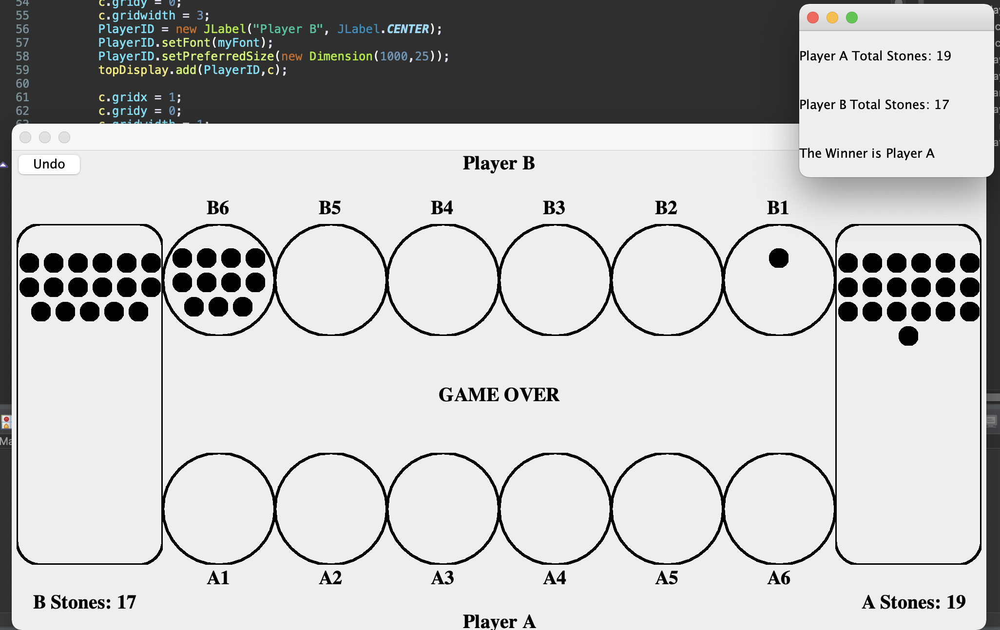

Projects
This page highlights some of the projects I have worked done in the past as well as my current works in progress and future development ideas. The idea is to fill this page with useful and interesting things.
The languages used in these projects are primarily in Java, Python, and C. Database work is usually done with MySQL. I am currently working on learning JavaScript and HTML/CSS.
Canvas to iCal
Java application that takes course information (grades, homework, etc) from Canvas and outputs an ICS file that can be uploaded to iCalendar. It also automates course registration on SJSU's peoplesoft portal.
Cipher Text Classification
Link to PDF PaperPerforming K-means clustering on cipher text that have undergone encryption through various techniques in order to find possible relations between them. This experiment highlighted the purpose of IOC and entropy in recognizing encryption styles.
Malware Classification
Link to PDF PaperHidden Markov Model that is trained on a malware family and tested in comparison with other malware families in order to test ability to use HMM's to detect malware. In this case, three families were tested against each other (winwebsec, zbot, zeroaccess).

Mancala Game
Mancala game that is build completely in Java through AWT and Swing, tested with JUnit. A simple two player game following MVC structure and allows for customization through decorators.